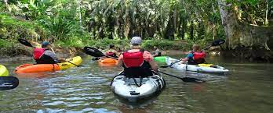

Discover the stunning Portuguese coastline from a different perspective on a sea kayak tour. Paddle from the beach and follow your guide along the rugged shorelines of the cliffs and take in the beauty of the vast Atlantic Ocean.
The tour starts on the beach with a quick lesson for everyone and once we're all set up we'll get in the water and start practicing our paddling skills. Once the whole group gathers in the water and feels comfortable, we will start the tour and explore the coast, its secret beaches and some amazing caves that we have around the Albufeira coast.
Price
$65 USD / person